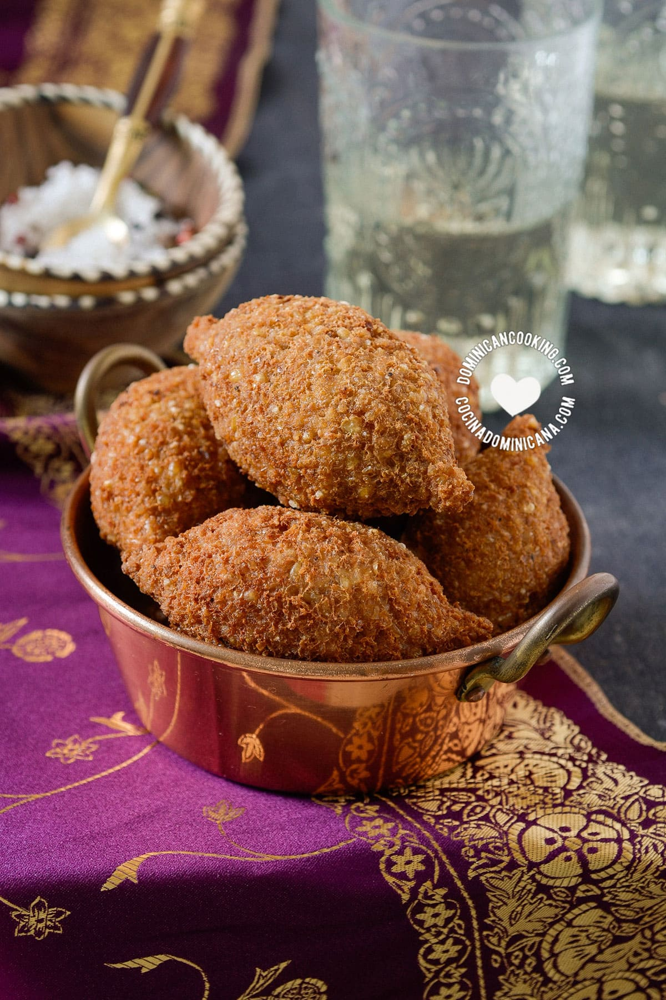

Soak the bulgur wheat in enough water to cover and set aside
To make the filling, sauté the chopped onions in regular olive oil until golden on medium low heat
Add 500g of minced meat to the onions and cook out the meat on medium high heat
Add the 7 spice, kamouneh spices, black pepper and salt and use the back of your wooden spoon to break up the mea
When it is cooked turn off the heat and add the sumac and chopped walnuts. Taste to make any adjustments then cover and set aside
Drain the bulgur wheat and add to a large bowl. Take out the kilo of meat and prepare food processor
In several batches, add the bulgur wheat and equal amounts of meat to the food processor and process until it clumps together and starts to roll in the processor bowl.
Roughly chop 2 onions to go in the food processor along with the 7 spices, kamouneh spices, black pepper and salt. Blitz well
When you have combined all the meat and bulgur wheat in a bowl, add the blitzed onion spice mix and the cornflour, then bring everything together preferably with your hands
If it is too dry add a bit of water, you don't want it too loose, sticky or crumbly but so it holds together nicely. If you don't mind tasting a bit of raw meat check a tiny bit for saltiness and adjust as necessary
Add approx half a cup of sunflower to a small bowl which you can dip your fingers into when shaping the kibbeh to avoid sticking. Clean your table and arrange a workflow with a large clean tray, the sunflower oil, the filling and the casing mix
Take some casing and roll into golf ball size, indent the middle then hollow out the inside with your index finger turning as you do so until you have a half shell. Add a spoon of filling and close up the casing. Compress well with your hands and shape into classic kibbeh morsels (see video)
Line up the kibbeh on the tray until you finish the filling
Deep fry your kibbeh morsels in sunflower or vegetable oil and serve with yoghurt dip